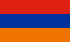

Europa
 Albanien
Albanien- Armenien
 Belgien
Belgien Bulgarien
Bulgarien Deutschland
Deutschland- Dänemark
 Estland
Estland- Färöer Inseln
 Finnland
Finnland- Frankreich
 Griechenland
Griechenland Großbrittannien
Großbrittannien Holland
Holland- Irland
- Island
 Israel
Israel Italien
Italien- Kosovo
 Kroatien
Kroatien Lettland
Lettland Littauen
Littauen Luxembourg
Luxembourg- Makedonien
 Malta
Malta Moldova
Moldova- Molvanîen
 Montenegro
Montenegro Norwegen
Norwegen- Polen
- Portugal
 Rumänien
Rumänien Russland
Russland Schweden
Schweden Schweiz
Schweiz- Serbien
- Slowakei
 Slowenien
Slowenien Spanien
Spanien- Tschechien
- Türkei
 Ukraine
Ukraine Ungarn
Ungarn Weißrussland
Weißrussland Zypern
Zypern Österreich
Österreich

 Index
Index Themen
Themen Hierarchisch
Hierarchisch Länder
Länder Karten
Karten Suche
Suche